遊びで植物を育てよう
2023/12/24
菊を2年間かまっていませんでした。
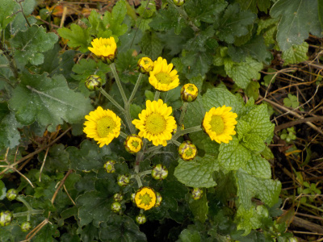
家のあちこちで菊が咲き出しました。でも植えっぱなしだったり、草刈りで切ったりでみんな小さいです。
せっかく年末年始に咲くのに、活用出来ないのはちょっともったいないですね。
来年は鉢植えを玄関に置けるようにしたいな。
【菊TOP】
【花TOP】
【園芸TOP】
2022/11/20
今年は菊をかまっていません。
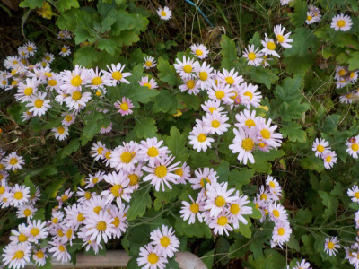
去年は挿し芽して増やしていた菊ですが、今年は全然関心がなく何もしていません。
放置していたので、茎が倒れて伸びて横に広がっています。
飽きたかな？やる気が全然ないです。
【菊TOP】
【花TOP】
【園芸TOP】
2022/01/23
挿し木した冬の菊が咲いています。
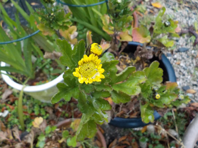
去年挿し木した菊が咲きました。苗が小さいので花も小さいです。
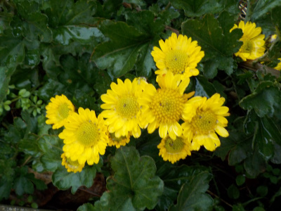
親の菊はこんな感じです。
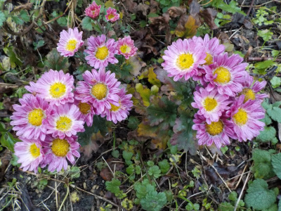
色の違う菊も咲いてました。
我が家には増えやすいのか、この2種類の菊が多く植わっています。
違う時期の菊が欲しいな。
【菊TOP】
【花TOP】
【園芸TOP】
2021/11/28
追加で挿し木した菊を鉢上げしました。
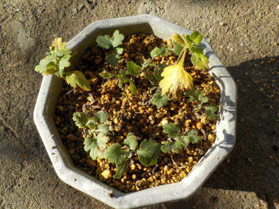
本格的な冬が来る前に菊の鉢上げをしました。
あんまり育っていないですが、ちゃんと根っこは出ています。
【菊TOP】
【花TOP】
【園芸TOP】
2021/11/13
今年挿し木した菊が咲きました。
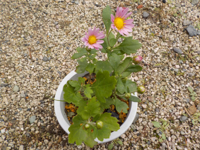
まだ小さい苗ですが花が咲きました。
なんか簡単に育っていいですね。
【菊TOP】
【花TOP】
【園芸TOP】
2021/11/07
菊が咲きだしました。
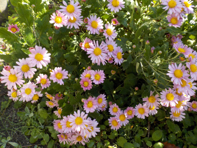
今年は菊を挿し木で増やしたので、順調にいけば来年は花がもっと増えますね。
でも同じ種類や同じ時期に咲く花を増やしてもあんまり意味ないかも。
【菊TOP】
【花TOP】
【園芸TOP】
2021/07/31
菊の挿し木を追加しました。
草刈りをしたんですが、草と一緒に菊を切ってしまったり、折ってしまったものがあったので、それを使って挿し芽をしました。
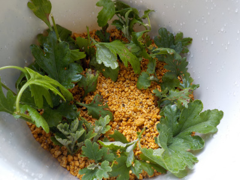
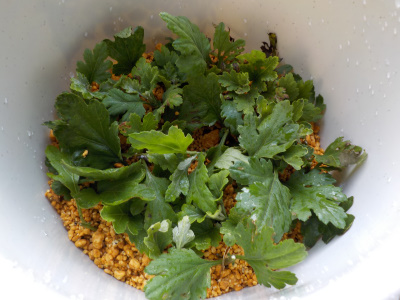
挿し芽1本の長さを短くしたので、本数が多いです。
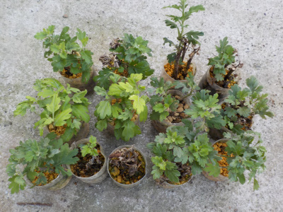
前回挿し芽した菊です。
一つ根っこがないか確認してみたら、細い根っこが沢山出ていました。
もうちょっと涼しくなったら植替えします。
【菊TOP】
【花TOP】
【園芸TOP】
2021/07/11
密閉での菊の挿し芽をやめました。
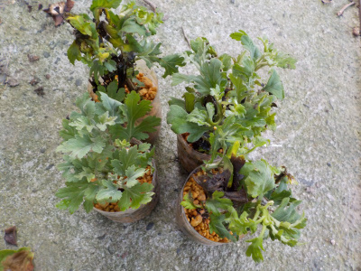
密閉のせいなのかは分かりませんが、結構黒くなってます。
小さくて細い個体は元気そうですが、大きいものほど枯れてる気がします。
このまま続けたら枯れる本数が増えていく気がするので、密閉はやめることにしました。
【菊TOP】
【花TOP】
【園芸TOP】
2021/06/26
挿し芽の菊が溶けました。
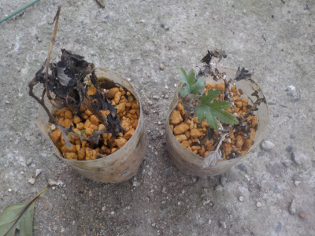
ペットボトルで挿し芽していた菊ですが、2本分ダメになりました。
葉っぱが黒くなって溶けました。普通に枯れて腐ったってことかな。
ペットボトル単位でダメになったってことは、ペットボトル内の環境がなにか悪かったんでしょうね。
【菊TOP】
【花TOP】
【園芸TOP】
2021/05/30
菊を大量に挿し芽しました。
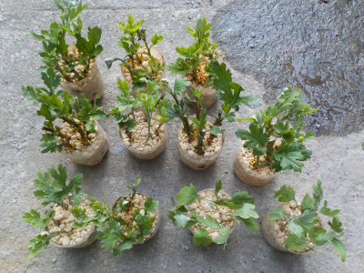
ペットボトルを使って菊を大量に挿し芽しました。
菊は切り花で使うので沢山あるといいですよね。
気に入った花があったら苗を買いたいと思っていますが、思っているだけで買っていません。
【菊TOP】
【花TOP】
【園芸TOP】
季節ごとに菊を咲かせたいです。
【おいしいものを食べよう。】【たくさん寝よう。】
【ソロ活をしよう!】【季節感のあることをしよう。】【動画視聴はほどほどに。】【当サイトの全てのコンテンツは無断転載禁止です。】